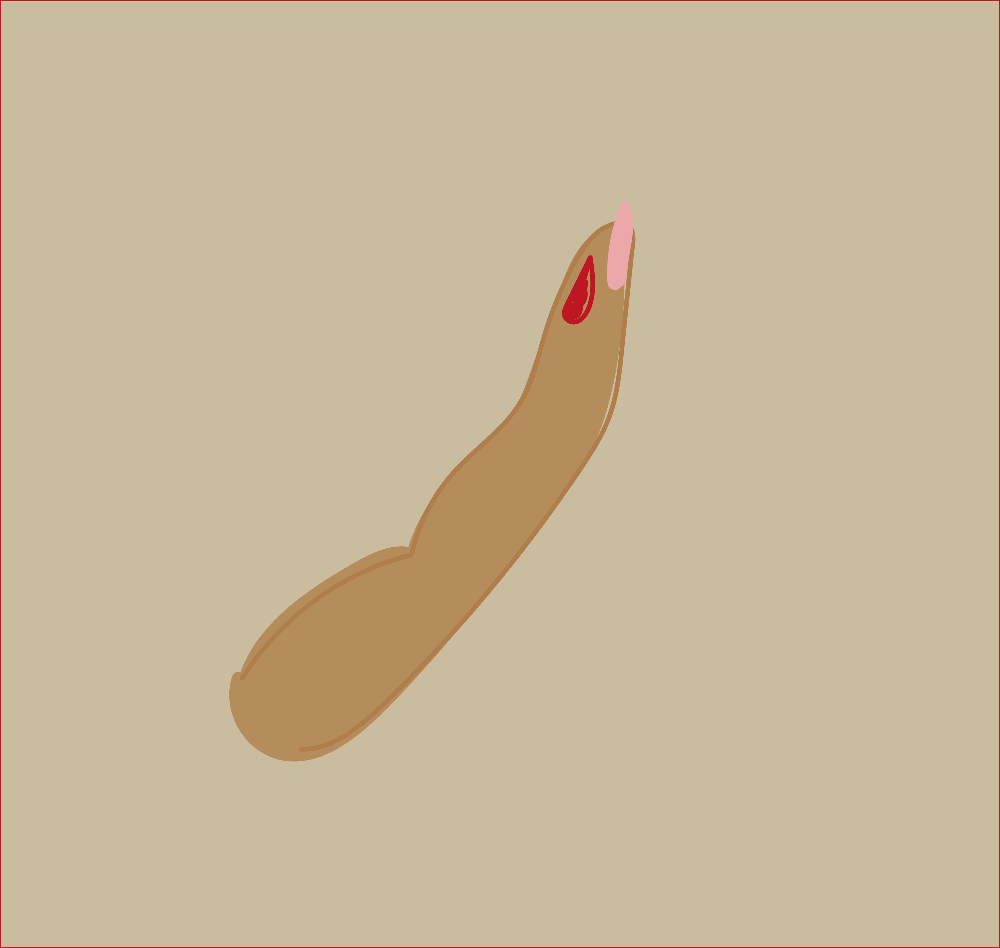
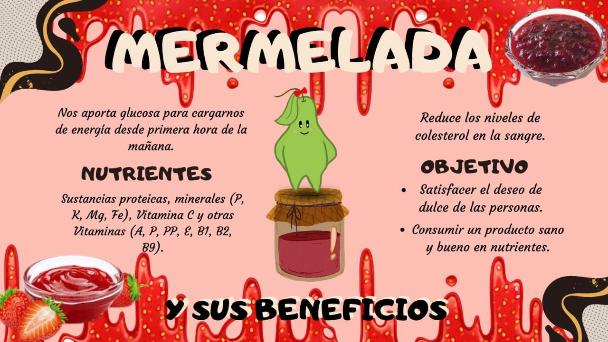

¿Conoces cuanta azúcar necesitas?

¿Conoces las consecuencias de consumir más azúcar del debido?

Hipertensión y colesterol
El consumo de alimentos con alto contenido glicémico (azúcar) se asocia a un aumento de los niveles
de
triglicéridos, de la grasa visceral, aumento de la resistencia a la insulina y de la presión
arterial.
Consumir exceso azúcar causa aumento en la tensión y un nivel de colesterol dañino.
Caries dentales
Consecuencia más leve, el consumo del consumo excesivo del azúcar y una mala higiene bucal hace que
crezcan bacterias.
Por ello es necesario moderar el consumo del azúcar y tener una buena higiene para
evitarlas.
Aumento de peso
Posible señal de que estas comiendo excesivamente azúcar, ya que al no tener un control sano del
azúcar que
consumes puedes descontrolar tu peso.

Diabetes
Está enfermedad crónica aparece cuando el páncreas no produce suficiente insulina. Un aumento en el
azúcar puede
llegar a ser una principal causa de la diabetes.
CUIDADO CON ESTOS ALIMENTOS
BEBIDAS AZUCARADAS
Las bebidas azucaradas son aquellas que contienen azúcar añadida. Estas incluyen: gaseosas, bebidas
deportivas,
energéticas y jugos.
Ejemplo:
Bebida Gaseosa de 500 ml:
contiene 55 gramos de azúcar
DULCES
Ejemplo:
Golosinas, chucherías y caramelos:
56 g azúcar / 100 g producto.
BENEFICIOS DE ALGUNOS ALIMENTOS
